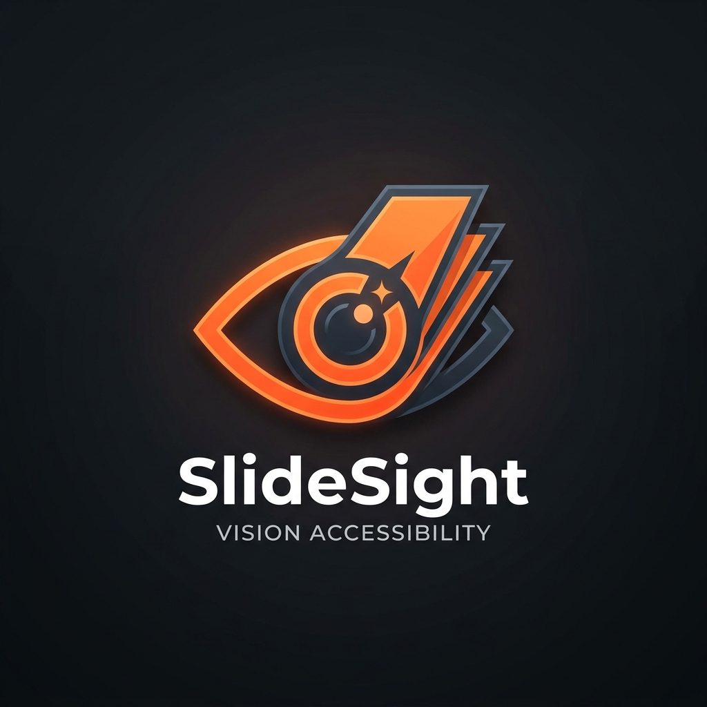
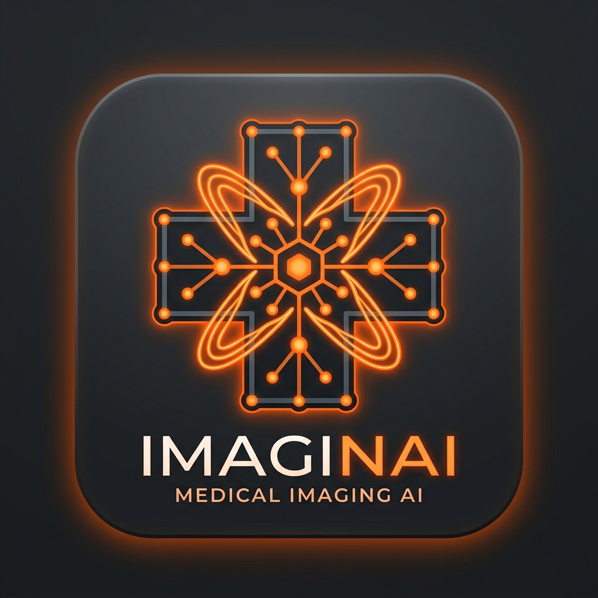

Selected engineering systems across multimodal AI, deep learning research, and cloud production.

On-premise multimodal accessibility pipeline using Qwen3-VL-32B and FastAPI, processing 505 slides in 1.4s/image while auditing 531 WCAG 2.1 AA violations.

Multi-task medical vision AI applying Swin Transformers for CheXpert multi-label classification (0.9004 AUC), TB lesion localization, and Swin-UNet V2 segmentation.
Production iOS application featuring conversational LLM assistant with streaming responses, automated receipt-parsing pipeline, and real-time Firestore sync.